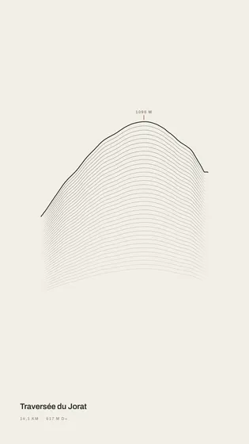
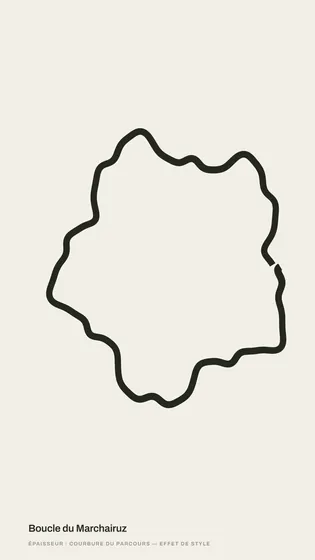
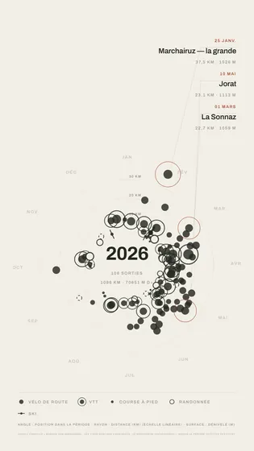
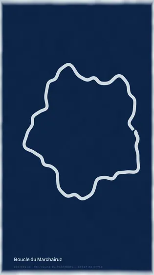

La suite
Tes sorties, racontées à ta façon.
Deux outils dans le navigateur : une affiche pour une sortie, un carnet de route pour un voyage. Pas de compte, rien à installer.
01 · Une sortie
Le studio
Une trace devient une affiche — à poser sur sa photo, à imprimer, à animer.




- Une quarantaine de planches : gravure, encre, almanach, atlas…
- Une sortie, une semaine ou une année entière
- Un fichier GPX, ou tes sorties intervals.icu
- Image, vidéo MP4 ou séquence PNG, pour Instagram ou l’impression
Ouvrir le studio
02 · Un voyage
Le carnet de route
Une trace et ses photos deviennent un récit — et une invitation à refaire le parcours.
- Chaque photo se pose seule au kilomètre où elle a été prise
- Un récit web à faire défiler, avec la carte et le vrai relief
- Un carrousel, une story et un Reel pour Instagram
- Promotion d’une collection Komoot, ou souvenir de la sortie
Ouvrir le carnet
Tes donnéesRien ne quitte ton ordinateur
Les traces et les photos sont lues dans le navigateur. Aucun serveur ne les reçoit.
PartoutUn fichier pour reprendre ailleurs
Un projet du studio ou un carnet s’enregistre en un fichier, et se rouvre sur un autre ordinateur.
OuvertLe code est libre
HTML, JavaScript et un canvas, sans dépendance. Tout est lisible et modifiable.